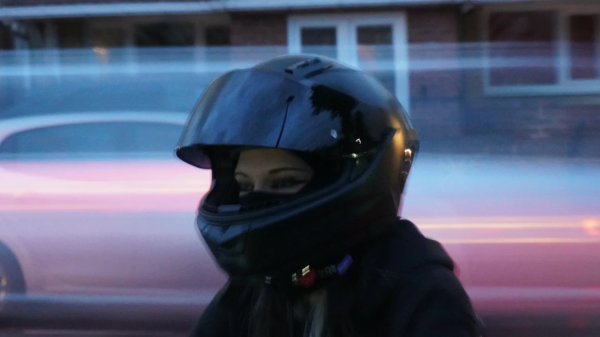

Welcome
Holostasis
This is a collection of the moments I've captured and the visuals I've created. From photography and image editing to graphic design, every project is an opportunity to experiment, refine, and create something worth looking at. Take a look around, and thanks for being here.
Visual Content Creator
Allan Liani
I'm a junior visual content creator focused on graphic design and photography, creating clean content for social media, digital platforms, and branding with a special interest in automotive and landscape visuals.
Recent Frames
Portfolio
Featured Projects


Client Work
Portfolio, content creation, and digital visuals for online projects.
Photography
Automotive, product, lifestyle, and location-led shoots with a cinematic finish.
Content Edits
Short-form visuals, reels, social layouts, and high-contrast campaign assets.
Brand Systems
Clean digital identity, direction, and repeatable content styling for launch-ready pages.